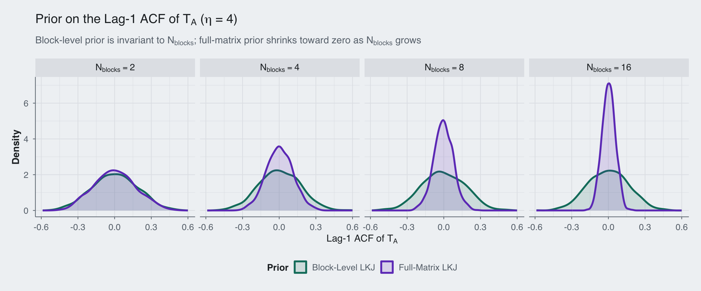
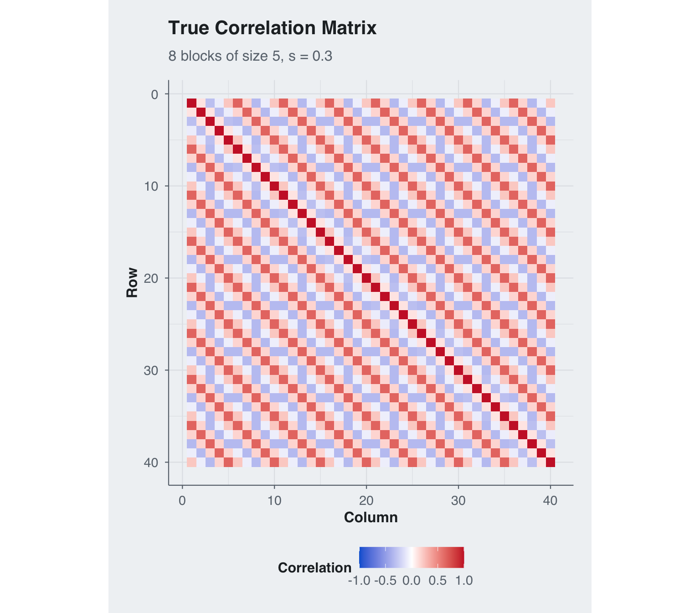
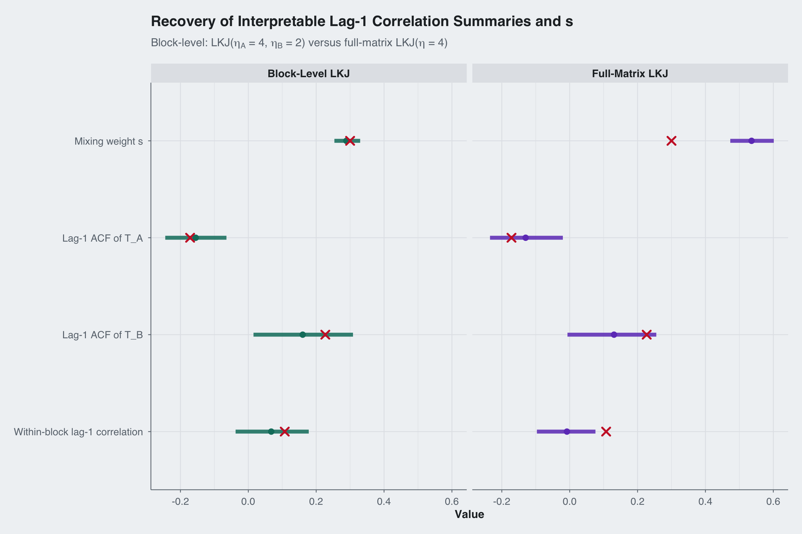
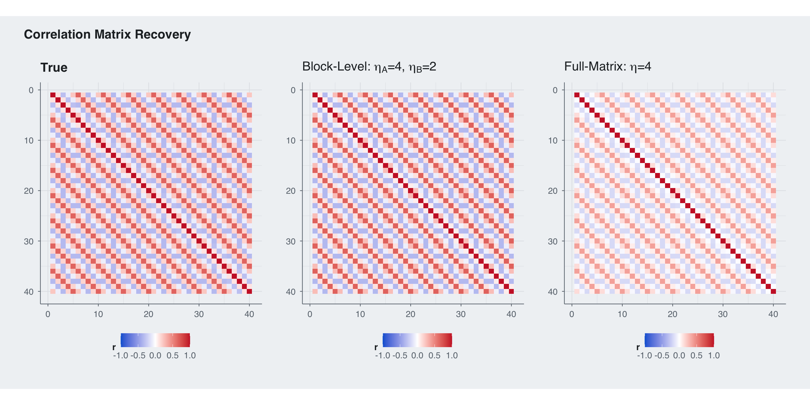
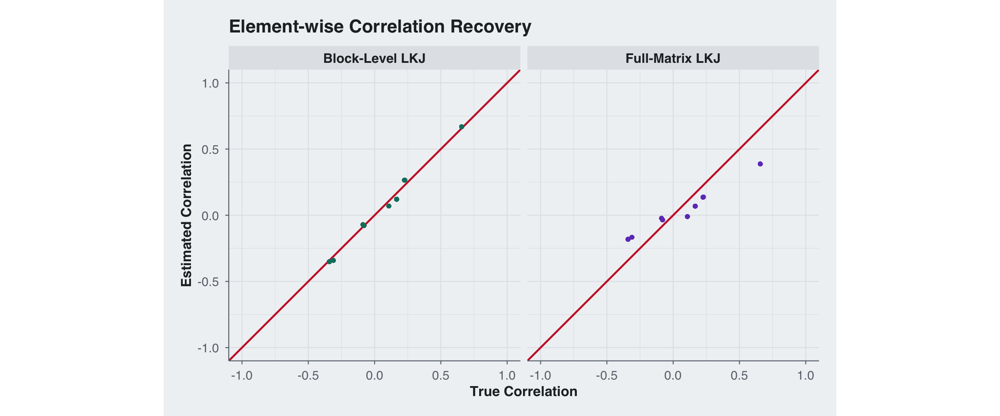
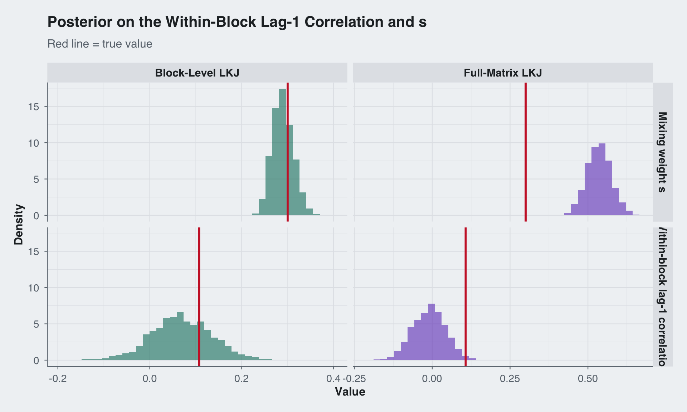

Code
library(cmdstanr)
library(mvtnorm)
library(ggplot2)
library(patchwork)
library(dplyr)
library(tidyr)
library(bayesplot)
source("../../R/theme_blog.R")
use_blog_bayesplot()Sean Pinkney
March 31, 2026
The LKJ distribution (Lewandowski et al. 2009) is the default prior for correlation matrices in Stan (Carpenter et al. 2017). For a \(P \times P\) correlation matrix \(R\), it has density: \[ p(R \mid \eta) \propto |R|^{\eta - 1} \] When \(\eta = 1\) the prior is uniform over correlation matrices; when \(\eta > 1\) it concentrates toward the identity. This works well for small, unstructured problems.
But many multivariate datasets have known structure. Consider \(N\) subjects each measured at \(M\) time points, giving \(P = NM\) total dimensions. The correlation matrix is not an arbitrary \(P \times P\) matrix as it has a natural decomposition into within-subject temporal correlations and between-subject cross-correlations. Slapping a single LKJ prior on the full matrix creates three problems:
Uniform shrinkage: LKJ treats every off-diagonal entry the same. It penalizes strong within-subject temporal correlation just as hard as strong cross-subject correlation, even though these have completely different interpretations and plausible ranges.
Dimension-dependent concentration: LKJ(\(\eta\)) concentrates harder as \(P\) grows. Adding more subjects (increasing \(N\)) makes the prior shrink all correlations toward zero.
No elicitation lever: A practitioner might know that temporal autocorrelation is strong while cross-subject coupling is weak. With a single \(\eta\) parameter for the full matrix, there is no way to encode this.
In this post I place LKJ priors on the building blocks of the correlation matrix instead of the assembled matrix. The compound-symmetric block-Toeplitz structure makes this decomposition tractable and the PACF parameterization makes it computationally clean.
This matters most in the regime where data are genuinely scarce. In longitudinal, multilevel, and panel settings, it is common to have fewer than 15 independent observational units: pilot studies, rare-disease cohorts, small classroom or clinic samples, intensive repeated-measures designs, and expensive laboratory experiments all produce this pattern. In those settings the number of correlation parameters implied by the full matrix can easily dwarf the amount of information in the data. That is exactly when we need to exploit structure rather than pretend the correlation matrix is unstructured.
The model is easiest to define through two Toeplitz covariance components: \[ \Sigma_A = \sigma_A^2 T_A, \qquad \Sigma_B = \sigma_B^2 T_B, \] where \(T_A\) and \(T_B\) are \(M \times M\) Toeplitz correlation matrices and \[ \sigma_A^2 = s \cdot \frac{N}{N - 1}, \qquad \sigma_B^2 = N(1-s), \] with a single mixing parameter \(s \in (0, 1)\).
These two components induce the full \(P \times P\) block matrix through the mean/deviation decomposition used in the likelihood. The diagonal blocks are \[ R_{\text{on}} = \frac{(N-1)\Sigma_A + \Sigma_B}{N} = s T_A + (1-s) T_B, \] and the off-diagonal blocks are \[ R_{\text{off}} = \frac{\Sigma_B - \Sigma_A}{N} = (1-s) T_B - \frac{s}{N-1} T_A. \] Equivalently, the full matrix can be written as \[ R = I_N \otimes R_{\text{on}} + (J_N - I_N) \otimes R_{\text{off}}, \] where \(J_N = \mathbf{1}_N \mathbf{1}_N^\top\).
This is the exact structure implemented in the Stan model. The key simplification is that every off-diagonal block is determined by the same two Toeplitz pieces and the same scalar \(s\), so we never parameterize each block separately.
Interpretation:
A Toeplitz correlation matrix is positive definite if and only if all its partial autocorrelation (PACF) coefficients \(\psi_1, \ldots, \psi_{M-1} \in (-1, 1)\) (Barndorff-Nielsen and Schou 1973). I map unconstrained parameters \(\psi_{\text{raw}} \in \mathbb{R}^D\) to this interval via a scaled \(\tanh\): \[ \psi_k = \tanh\!\left(\frac{\psi_{\text{raw}, k}}{\sqrt{D - 1}}\right) \] then recover the autocorrelation function (ACF) using the Durbin-Levinson recursion (Durbin 1960; Levinson 1946). This guarantees positive definiteness by construction.
The standard LKJ prior on the full compound-symmetric matrix uses the log-determinant of the assembled \(P \times P\) matrix: \[ \log p_{\text{full}}(\psi_A, \psi_B, s \mid \eta) = (\eta - 1) \log|R(\psi_A, \psi_B, s)| + \log|J_{\text{CS}}| \] where \(|J_{\text{CS}}|\) is the Jacobian from the compound-symmetric parameterization. The full log-determinant decomposes as: \[ \log|R| = (N-1)\Big(M \log \tfrac{sN}{N-1} + \log|T_A|\Big) + \Big(M \log N(1-s) + \log|T_B|\Big) \]
The problem is visible in this formula: the prior penalty on \(T_A\) is amplified by \((N-1)(\eta - 1)\). Adding subjects inflates the prior shrinkage on the block-specific temporal autocorrelation parameters in \(T_A\), even though the underlying temporal structure hasn’t changed at all. By contrast, the \(T_B\) term does not pick up the same \((N-1)\) amplification.
Instead of a single LKJ on \(R\), we place independent LKJ priors directly on \(T_A\) and \(T_B\): \[ \log p_{\text{block}}(\psi_A, \psi_B \mid \eta_A, \eta_B) = (\eta_A - 1) \log|T_A(\psi_A)| + \log|J_A| + (\eta_B - 1) \log|T_B(\psi_B)| + \log|J_B| \] where \(|J_A|\) and \(|J_B|\) are the Jacobians for each Toeplitz block’s PACF-to-correlation transformation.
This gives us three advantages:
Independent control: Set \(\eta_A = 4\) (stronger shrinkage on the block-specific component) while using \(\eta_B = 2\) (milder shrinkage on the shared component), or any other combination.
Invariant to \(N\): The prior on \(T_A\) depends only on the \(M \times M\) block, not on how many subjects there are. Adding subjects brings more data, not more prior shrinkage on the block-specific Toeplitz component.
Interpretable elicitation: “I believe the block-specific component is weak but the shared temporal component can persist” translates directly to \(\eta_A > \eta_B\).
The PACF parameterization makes this possible because:
So the change-of-variables formula applies cleanly to each component, giving us a well-defined density on the building blocks without needing to reason about the assembled \(P \times P\) matrix at all.
The compound-symmetric structure also enables an efficient likelihood. The quadratic form decomposes into \(M \times M\) Toeplitz systems:
For each observation, define the block mean \(\bar{\mathbf{z}} = \frac{1}{N}\sum_n \mathbf{z}^{(n)}\) and deviations \(\tilde{\mathbf{z}}^{(n)} = \mathbf{z}^{(n)} - \bar{\mathbf{z}}\). Then: \[ \mathbf{z}^\top \Sigma^{-1} \mathbf{z} = N\,\bar{\mathbf{z}}^\top \Sigma_B^{-1} \bar{\mathbf{z}} + \sum_{n=1}^{N} \tilde{\mathbf{z}}^{(n)\top} \Sigma_A^{-1} \tilde{\mathbf{z}}^{(n)} \] where \(\Sigma_A = \frac{sN}{N-1}T_A\) and \(\Sigma_B = N(1-s)T_B\). Each Toeplitz solve uses the innovations algorithm (Brockwell and Davis 2002) in \(O(M^2)\) time. The total cost is \(O(NM^2)\) per observation instead of \(O(P^3) = O(N^3M^3)\).
squash_pacf <- function(psi_raw) {
D <- length(psi_raw)
if (D <= 1) return(tanh(psi_raw))
return(tanh(psi_raw / sqrt(D - 1)))
}
pacf_to_acf <- function(psi_raw) {
D <- length(psi_raw)
rho <- numeric(D + 1)
rho[1] <- 1.0
if (D == 0) return(rho)
psi <- squash_pacf(psi_raw)
phi <- numeric(D)
for (k in 1:D) {
psi_k <- psi[k]
if (k > 1) {
phi_prev <- phi[1:(k - 1)]
for (j in 1:(k - 1)) {
phi[j] <- phi_prev[j] - psi_k * phi_prev[k - j]
}
}
phi[k] <- psi_k
rho[k + 1] <- sum(phi[1:k] * rev(rho[1:k]))
}
return(rho)
}
build_toeplitz <- function(r) {
n <- length(r)
outer(seq_len(n), seq_len(n), function(i, j) r[abs(i - j) + 1])
}
build_full_R <- function(psiA, psiB, s, M, N) {
rhoA <- pacf_to_acf(psiA)
rhoB <- pacf_to_acf(psiB)
sigmaA <- s * N / (N - 1)
sigmaB <- (1 - s) * N
a <- sigmaA * rhoA
b <- sigmaB * rhoB
r_on <- ((N - 1) * a + b) / N
r_off <- (b - a) / N
T_on <- build_toeplitz(r_on)
T_off <- build_toeplitz(r_off)
P <- M * N
R <- matrix(0, P, P)
for (i in 0:(N - 1))
for (j in 0:(N - 1)) {
idx_i <- (i * M + 1):((i + 1) * M)
idx_j <- (j * M + 1):((j + 1) * M)
R[idx_i, idx_j] <- if (i == j) T_on else T_off
}
R
}Before fitting any data, let’s see what the two priors imply about the lag-1 autocorrelation in \(T_A\). To do this we can sample from the Stan model directly with no observations and the posterior is the prior, so these draws come from the exact prior induced by the model we will fit later.
sample_prior_lag1 <- function(N_blocks, prior_on_full_corr, eta = 4, seed = 123) {
K <- M * N_blocks
fit_prior <- model$sample(
data = list(
M_blocksize = M,
N_blocks = N_blocks,
eta_lkj_a = eta,
eta_lkj_b = eta,
N = 0,
K = K,
y = matrix(numeric(0), nrow = 0, ncol = K),
mu = rep(0, K),
prior_on_full_corr = prior_on_full_corr
),
chains = 1,
parallel_chains = 1,
iter_warmup = 500,
iter_sampling = 1000,
seed = seed,
refresh = 0
)
draws_A <- fit_prior$draws("psi_A_raw", format = "matrix")
lag1_A <- apply(draws_A, 1, function(x) pacf_to_acf(x)[2])
data.frame(
lag1 = lag1_A,
Prior = if (prior_on_full_corr == 1) "Full-Matrix LKJ" else "Block-Level LKJ",
N_blocks = factor(paste0("N[blocks] == ", N_blocks), levels = paste0("N[blocks] == ", c(2, 4, 8, 16)))
)
}set.seed(42)
M <- 5
eta <- 4
prior_df <- dplyr::bind_rows(
lapply(c(2, 4, 8, 16), function(n_blocks) {
dplyr::bind_rows(
sample_prior_lag1(n_blocks, prior_on_full_corr = 0, eta = eta, seed = rbinom(1, prob = 0.3, size = 100000)),
sample_prior_lag1(n_blocks, prior_on_full_corr = 1, eta = eta, seed = rbinom(1, prob = 0.3, size = 100000))
)
})
)Running MCMC with 1 chain...Chain 1 finished in 0.1 seconds.
Running MCMC with 1 chain...Chain 1 finished in 0.1 seconds.
Running MCMC with 1 chain...Chain 1 finished in 0.1 seconds.
Running MCMC with 1 chain...Chain 1 finished in 0.1 seconds.
Running MCMC with 1 chain...Chain 1 finished in 0.2 seconds.
Running MCMC with 1 chain...Chain 1 finished in 0.2 seconds.
Running MCMC with 1 chain...Chain 1 finished in 0.8 seconds.
Running MCMC with 1 chain...Chain 1 finished in 0.9 seconds.ggplot(prior_df, aes(x = lag1, color = Prior, fill = Prior)) +
geom_density(linewidth = 1.1, adjust = 1.1, alpha = 0.15) +
facet_wrap(~N_blocks, nrow = 1, labeller = label_parsed) +
scale_color_manual(values = c(blog_colors$teal, blog_colors$purple)) +
scale_fill_manual(values = c(blog_colors$teal, blog_colors$purple)) +
theme_blog() +
labs(
x = expression("Lag-1 ACF of " * T[A]),
y = "Density",
title = expression("Prior on the Lag-1 ACF of " * T[A] * " (" * eta * " = 4)"),
subtitle = expression("Block-level prior is invariant to " * N[blocks] * "; full-matrix prior shrinks toward zero as " * N[blocks] * " grows")
) +
theme(legend.position = "bottom")
The pattern is clear: the block-level prior (teal) stays put regardless of how many blocks we add. The full-matrix prior (purple) collapses toward zero as \(N_{\text{blocks}}\) grows. We see that the LKJ prior increasingly regularizes against strong temporal autocorrelation, not because the data say so, but because the prior penalizes the determinant of a larger and larger matrix.
I simulate a deliberately prior-sensitive regime with 8 blocks of size 5 and only 10 observations. The block-specific Toeplitz component is weak, while the shared component is stronger and more structured, with \(s = 0.30\) placing most of the within-block signal on \(T_B\). This is exactly the setting where a practitioner would want to shrink \(T_A\) harder than \(T_B\).
This kind of sample size is not contrived. If the observational unit is a person, classroom, clinic, or experimental batch, it is easy to end up with single-digit or low-teens sample sizes while still recording multiple repeated measurements within each unit. The structure in the covariance is then the main source of statistical leverage: without it, estimation is driven too heavily by the geometry of a large generic correlation prior rather than by defensible scientific assumptions about how the measurements are related.
set.seed(42)
M_blocksize <- 5
N_blocks <- 8
D <- M_blocksize - 1
M_total <- N_blocks * M_blocksize
N_obs <- 10
true_s <- 0.30
true_psi_A_raw <- c(-0.3, 0.1, 0.0, 0.0) # weak block-specific component
true_psi_B_raw <- c(0.4, -1.1, 0.5, 0.0) # strong shared temporal component
R_true <- build_full_R(true_psi_A_raw, true_psi_B_raw, true_s,
M_blocksize, N_blocks)
# Verify positive definiteness
stopifnot(all(eigen(R_true, only.values = TRUE)$values > 0))
y <- rmvnorm(N_obs, sigma = R_true)
cat("True psi_A (constrained):", round(squash_pacf(true_psi_A_raw), 3), "\n")True psi_A (constrained): -0.171 0.058 0 0 True psi_B (constrained): 0.227 -0.562 0.281 0 True lag-1 ACF(T_A): -0.171 True lag-1 ACF(T_B): 0.227 True within-block lag-1 correlation: 0.107 True s: 0.3 Dimensions: N_obs = 10 , M = 5 , N_blocks = 8 , P = 40 corr_df <- expand.grid(Row = 1:M_total, Col = 1:M_total) |>
mutate(value = as.vector(R_true))
ggplot(corr_df, aes(x = Col, y = Row, fill = value)) +
geom_tile() +
scale_fill_gradient2(
low = blog_colors$blue, mid = "white", high = blog_colors$red,
midpoint = 0, limits = c(-1, 1), name = "Correlation"
) +
scale_y_reverse() +
coord_equal() +
theme_blog() +
labs(x = "Column", y = "Row",
title = "True Correlation Matrix",
subtitle = paste0(N_blocks, " blocks of size ", M_blocksize, ", s = ", true_s))
The key advantage of block-level priors is independent control. A practitioner who believes the block-specific component should be tightly regularized but the shared component should remain more flexible can set \(\eta_A = 4\) and \(\eta_B = 2\). The full-matrix LKJ prior has a single \(\eta\) that applies everywhere.
I fit the same data with both approaches, but this is not a calibration-matched comparison in the sense of equal induced priors on \(T_A\) and \(T_B\). The block-level prior is applied directly to the component Toeplitz matrices, while the full-matrix LKJ prior is applied to the assembled \(P \times P\) correlation matrix. That means the induced shrinkage on \(T_A\), \(T_B\), and \(s\) is different by construction and depends on the full block layout. The point of the comparison is exactly that the block-level formulation can target the two components separately, whereas the full-matrix LKJ cannot.
# Fit 1: Block-level LKJ priors -- domain-informed
# eta_A = 4 (shrink the block-specific component)
# eta_B = 2 (leave the shared component more flexible)
fit_block <- model$sample(
data = list(
M_blocksize = M_blocksize, N_blocks = N_blocks,
eta_lkj_a = 4, eta_lkj_b = 2,
N = N_obs, K = M_total, y = y, mu = rep(0, M_total),
prior_on_full_corr = 0
),
iter_warmup = 500, iter_sampling = 500,
parallel_chains = 4, seed = 123, refresh = 0
)Running MCMC with 4 parallel chains...Chain 1 finished in 1.8 seconds.
Chain 2 finished in 1.8 seconds.
Chain 3 finished in 1.9 seconds.
Chain 4 finished in 1.8 seconds.
All 4 chains finished successfully.
Mean chain execution time: 1.8 seconds.
Total execution time: 2.0 seconds.# Fit 2: Single-eta full-matrix LKJ prior on the assembled correlation matrix
fit_full <- model$sample(
data = list(
M_blocksize = M_blocksize, N_blocks = N_blocks,
eta_lkj_a = 4, eta_lkj_b = 4,
N = N_obs, K = M_total, y = y, mu = rep(0, M_total),
prior_on_full_corr = 1
),
iter_warmup = 500, iter_sampling = 500,
parallel_chains = 4, seed = 123, refresh = 0
)Running MCMC with 4 parallel chains...Chain 1 finished in 1.7 seconds.
Chain 3 finished in 1.7 seconds.
Chain 4 finished in 1.7 seconds.
Chain 2 finished in 1.8 seconds.
All 4 chains finished successfully.
Mean chain execution time: 1.7 seconds.
Total execution time: 1.8 seconds.extract_lag1_metrics <- function(fit, prior_label) {
draws_A <- fit$draws("psi_A_raw", format = "matrix")
draws_B <- fit$draws("psi_B_raw", format = "matrix")
draws_s <- as.numeric(fit$draws("s", format = "matrix")[, 1])
lag1_A <- apply(draws_A, 1, function(x) pacf_to_acf(x)[2])
lag1_B <- apply(draws_B, 1, function(x) pacf_to_acf(x)[2])
lag1_within <- draws_s * lag1_A + (1 - draws_s) * lag1_B
data.frame(
Prior = prior_label,
`Lag-1 ACF of T_A` = lag1_A,
`Lag-1 ACF of T_B` = lag1_B,
`Within-block lag-1 correlation` = lag1_within,
`Mixing weight s` = draws_s,
check.names = FALSE
) |>
pivot_longer(-Prior, names_to = "Quantity", values_to = "value")
}
lag1_metrics <- bind_rows(
extract_lag1_metrics(fit_block, "Block-Level LKJ"),
extract_lag1_metrics(fit_full, "Full-Matrix LKJ")
)
quantity_levels <- rev(c(
"Mixing weight s",
"Lag-1 ACF of T_A",
"Lag-1 ACF of T_B",
"Within-block lag-1 correlation"
))
lag1_summary <- lag1_metrics |>
group_by(Prior, Quantity) |>
summarize(
q5 = quantile(value, 0.05),
median = median(value),
q95 = quantile(value, 0.95),
.groups = "drop"
) |>
mutate(Quantity = factor(Quantity, levels = quantity_levels))
true_lag1_df <- data.frame(
Quantity = factor(
c("Lag-1 ACF of T_A", "Lag-1 ACF of T_B", "Within-block lag-1 correlation", "Mixing weight s"),
levels = quantity_levels
),
true_value = c(
pacf_to_acf(true_psi_A_raw)[2],
pacf_to_acf(true_psi_B_raw)[2],
true_s * pacf_to_acf(true_psi_A_raw)[2] +
(1 - true_s) * pacf_to_acf(true_psi_B_raw)[2],
true_s
)
)
ggplot(lag1_summary, aes(x = median, y = Quantity, color = Prior)) +
geom_linerange(aes(xmin = q5, xmax = q95), linewidth = 2, alpha = 0.85) +
geom_point(size = 2.5) +
geom_point(data = true_lag1_df, aes(x = true_value, y = Quantity),
inherit.aes = FALSE,
color = blog_colors$red, shape = 4, size = 3, stroke = 1.5) +
facet_wrap(~Prior) +
scale_color_manual(values = c(blog_colors$teal, blog_colors$purple)) +
theme_blog() +
labs(
x = "Value",
y = NULL,
title = "Recovery of Interpretable Lag-1 Correlation Summaries and s",
subtitle = expression("Block-level: LKJ(" * eta[A] * " = 4, " * eta[B] * " = 2) versus full-matrix LKJ(" * eta * " = 4)")
) +
theme(legend.position = "none")
R_block <- matrix(fit_block$summary("R")$mean, M_total, M_total)
R_full <- matrix(fit_full$summary("R")$mean, M_total, M_total)
make_corr_df <- function(R, label) {
expand.grid(Row = 1:M_total, Col = 1:M_total) |>
mutate(value = as.vector(R), Matrix = label)
}
lims <- c(-1, 1)
p_true <- ggplot(make_corr_df(R_true, "True"), aes(x = Col, y = Row, fill = value)) +
geom_tile() +
scale_fill_gradient2(low = blog_colors$blue, mid = "white", high = blog_colors$red,
midpoint = 0, limits = lims, name = "r") +
scale_y_reverse() + coord_equal() + theme_blog() +
labs(title = "True", x = NULL, y = NULL)
p_block_corr <- ggplot(make_corr_df(R_block, "Block-Level"), aes(x = Col, y = Row, fill = value)) +
geom_tile() +
scale_fill_gradient2(low = blog_colors$blue, mid = "white", high = blog_colors$red,
midpoint = 0, limits = lims, name = "r") +
scale_y_reverse() + coord_equal() + theme_blog() +
labs(title = expression("Block-Level: " * eta[A] * "=4, " * eta[B] * "=2"), x = NULL, y = NULL)
p_full_corr <- ggplot(make_corr_df(R_full, "Full-Matrix"), aes(x = Col, y = Row, fill = value)) +
geom_tile() +
scale_fill_gradient2(low = blog_colors$blue, mid = "white", high = blog_colors$red,
midpoint = 0, limits = lims, name = "r") +
scale_y_reverse() + coord_equal() + theme_blog() +
labs(title = expression("Full-Matrix: " * eta * "=4"), x = NULL, y = NULL)
p_true + p_block_corr + p_full_corr +
plot_layout(nrow = 1) +
plot_annotation(
title = "Correlation Matrix Recovery",
theme = theme_blog()
)
scatter_block <- data.frame(
True = R_true[lower.tri(R_true)],
Estimated = R_block[lower.tri(R_block)],
Prior = "Block-Level LKJ"
)
scatter_full <- data.frame(
True = R_true[lower.tri(R_true)],
Estimated = R_full[lower.tri(R_full)],
Prior = "Full-Matrix LKJ"
)
scatter_df <- rbind(scatter_block, scatter_full)
ggplot(scatter_df, aes(x = True, y = Estimated)) +
geom_abline(slope = 1, intercept = 0, color = blog_colors$red,
linewidth = 0.8) +
geom_point(aes(color = Prior), alpha = 0.5, size = 1.2) +
facet_wrap(~Prior) +
scale_color_manual(values = c(blog_colors$teal, blog_colors$purple)) +
coord_equal(xlim = c(-1, 1), ylim = c(-1, 1)) +
theme_blog() +
labs(x = "True Correlation", y = "Estimated Correlation",
title = "Element-wise Correlation Recovery") +
theme(legend.position = "none")
block_id <- rep(1:N_blocks, each = M_blocksize)
within_mask <- outer(block_id, block_id, `==`) & lower.tri(R_true)
between_mask <- outer(block_id, block_id, `!=`) & lower.tri(R_true)
rmse_within_block <- sqrt(mean((R_true[within_mask] - R_block[within_mask])^2))
rmse_within_full <- sqrt(mean((R_true[within_mask] - R_full[within_mask])^2))
rmse_between_block <- sqrt(mean((R_true[between_mask] - R_block[between_mask])^2))
rmse_between_full <- sqrt(mean((R_true[between_mask] - R_full[between_mask])^2))
rmse_overall_block <- sqrt(mean((R_true[lower.tri(R_true)] - R_block[lower.tri(R_block)])^2))
rmse_overall_full <- sqrt(mean((R_true[lower.tri(R_true)] - R_full[lower.tri(R_full)])^2))
rmse_df <- data.frame(
Component = c("Within-block entries", "Between-block entries", "Overall"),
`Block-Level LKJ` = c(rmse_within_block, rmse_between_block, rmse_overall_block),
`Full-Matrix LKJ` = c(rmse_within_full, rmse_between_full, rmse_overall_full)
)
knitr::kable(rmse_df, digits = 4)| Component | Block.Level.LKJ | Full.Matrix.LKJ |
|---|---|---|
| Within-block entries | 0.0323 | 0.1161 |
| Between-block entries | 0.0289 | 0.1567 |
| Overall | 0.0293 | 0.1530 |
The RMSE split shows exactly why block-level priors matter here: they let us regularize the weak block-specific component without over-shrinking the strong shared component. In this regime the block-level prior wins on the within-block entries, the between-block entries, and the overall matrix RMSE.
The most practically relevant quantity is the lag-1 correlation inside a diagonal block: \[ \rho_{\text{within}, 1} = s \rho_{A, 1} + (1 - s) \rho_{B, 1}. \] This is what determines how strongly adjacent time points within the same subject are correlated. The other key scalar is \(s\), which controls how much of that within-block dependence is attributed to the block-specific component versus the shared component. With \(\eta_A = 4\) the block-level prior shrinks the weak block-specific component, while \(\eta_B = 2\) leaves the shared component flexible enough to match the data. The full-matrix LKJ(4) prior cannot separate these roles, so it ends up shrinking both the lag-1 summary and the implied decomposition differently.
draws_block_A <- fit_block$draws("psi_A_raw", format = "matrix")
draws_block_B <- fit_block$draws("psi_B_raw", format = "matrix")
draws_block_s <- as.numeric(fit_block$draws("s", format = "matrix")[, 1])
draws_full_A <- fit_full$draws("psi_A_raw", format = "matrix")
draws_full_B <- fit_full$draws("psi_B_raw", format = "matrix")
draws_full_s <- as.numeric(fit_full$draws("s", format = "matrix")[, 1])
lag1_A_block <- apply(draws_block_A, 1, function(x) pacf_to_acf(x)[2])
lag1_B_block <- apply(draws_block_B, 1, function(x) pacf_to_acf(x)[2])
lag1_A_full <- apply(draws_full_A, 1, function(x) pacf_to_acf(x)[2])
lag1_B_full <- apply(draws_full_B, 1, function(x) pacf_to_acf(x)[2])
lag1_block <- draws_block_s * lag1_A_block + (1 - draws_block_s) * lag1_B_block
lag1_full <- draws_full_s * lag1_A_full + (1 - draws_full_s) * lag1_B_full
true_lag1 <- true_s * pacf_to_acf(true_psi_A_raw)[2] +
(1 - true_s) * pacf_to_acf(true_psi_B_raw)[2]
lag1_df <- data.frame(
value = c(lag1_block, lag1_full, draws_block_s, draws_full_s),
Prior = c(
rep(c("Block-Level LKJ", "Full-Matrix LKJ"), each = length(lag1_block)),
rep(c("Block-Level LKJ", "Full-Matrix LKJ"), each = length(draws_block_s))
),
Quantity = c(
rep("Within-block lag-1 correlation", 2 * length(lag1_block)),
rep("Mixing weight s", 2 * length(draws_block_s))
)
)
true_posterior_df <- data.frame(
Quantity = c("Within-block lag-1 correlation", "Mixing weight s"),
true_value = c(true_lag1, true_s)
)
ggplot(lag1_df, aes(x = value, fill = Prior)) +
geom_histogram(aes(y = after_stat(density)), bins = 40,
alpha = 0.6, position = "identity") +
geom_vline(data = true_posterior_df, aes(xintercept = true_value),
color = blog_colors$red, linewidth = 1,
inherit.aes = FALSE) +
scale_fill_manual(values = c(blog_colors$teal, blog_colors$purple)) +
facet_grid(Quantity ~ Prior, scales = "free_x") +
theme_blog() +
labs(
x = "Value",
y = "Density",
title = "Posterior on the Within-Block Lag-1 Correlation and s",
subtitle = "Red line = true value"
) +
theme(legend.position = "none")
| Scenario | Recommended Prior |
|---|---|
| Domain knowledge that within- and between-block correlation differ | Block-level: set \(\eta_A \neq \eta_B\) |
| Many blocks (\(N\) large) | Block-level: avoids \(N\)-dependent shrinkage on \(T_A\) |
| Want a single “regularize toward identity” prior and \(P\) is small | Full-matrix LKJ is fine |
| No block structure at all | Standard LKJ (this model doesn’t apply) |
There is no free lunch, the full-matrix LKJ prior provides a single style of regularization, which can still be useful when there is little structural knowledge. The block-level prior’s advantage is not about always having lower error, it’s about encoding domain knowledge that the full-matrix prior cannot represent. When a practitioner believes the block-specific and shared components should be regularized differently, the block-level prior translates that directly into \(\eta_A \neq \eta_B\). The full-matrix prior has no mechanism for this asymmetry.
The key insight is structural: when a correlation matrix decomposes into interpretable components, the prior should too. The PACF parameterization enables this by giving each Toeplitz block an independent parameter vector with a clean Jacobian. The compound-symmetric block-Toeplitz structure then provides the scaffold that turns two small priors into a valid prior on the full \(P \times P\) matrix.
The practical value is prior elicitation. In most panel or longitudinal settings, a researcher has different beliefs about temporal dependence within subjects versus cross-sectional dependence between subjects. Block-level priors make these beliefs expressible; the full-matrix LKJ prior forces a single \(\eta\) that governs everything.
An alternative route is to place a prior directly on the Toeplitz row through a spectral parameterization, such as a finite mixture of AR(1) components, and pair it with Trench-style Toeplitz linear algebra (Trench 1985a, 1985b). Compared with that approach, the model in this post makes a different tradeoff. The spectral formulation is natural when the main object of interest is a single Toeplitz covariance and the prior should act directly on its spectrum. Here the goal is different: we want a block-specific Toeplitz component and a shared Toeplitz component, each with its own prior strength, combined through one scalar mixing parameter. The PACF parameterization makes each Toeplitz block valid by construction, while the compound-symmetric decomposition makes the full block matrix valid by construction. That is why this formulation is a better fit for prior elicitation on “within-block” versus “shared-across-block” correlation, even though a Trench-based implementation would be a strong alternative for pure Toeplitz models.
This principle generalizes beyond the specific structure shown here. Any time a large correlation matrix is built from smaller pieces – Kronecker products, block-diagonal structures, factor models – it’s worth asking whether priors on the pieces give better behavior than a single prior on the assembly.
The Stan implementation exposes both options via a single flag (prior_on_full_corr), making it easy to compare in practice. The efficient innovations-based likelihood handles the computation regardless of which prior is used.
compound-symmetric-block-toeplitz.stan
functions {
/**
* Squashes unconstrained partial autocorrelation (PACF) parameters to [-1, 1].
* Uses tanh transformation with scaling to maintain numerical stability.
*
* @param psi_raw A vector of unconstrained PACF parameters
* @return A vector of squashed PACF parameters in [-1, 1]
*/
vector squash_pacf(vector psi_raw) {
int D = rows(psi_raw);
if (D <= 1) {
return tanh(psi_raw);
}
return tanh(psi_raw / sqrt(D - 1.0));
}
/**
* Converts PACF coefficients to ACF coefficients using the Durbin-Levinson
* algorithm. This is essential for constructing valid Toeplitz correlation
* matrices from PACF parameters.
*
* @param psi_raw A vector of D unconstrained PACF parameters
* @return A vector of D+1 ACF coefficients [rho_0, rho_1, ..., rho_D],
* where rho_0 = 1
*/
vector pacf_to_acf(vector psi_raw) {
int D = rows(psi_raw);
vector[D + 1] rho;
rho[1] = 1.0;
if (D == 0) {
return rho;
}
vector[D] psi = squash_pacf(psi_raw);
vector[D] phi;
for (k in 1:D) {
real psi_k = psi[k];
real phi_k_k = psi_k;
if (k > 1) {
vector[k - 1] phi_prev = segment(phi, 1, k - 1);
for (j in 1:(k - 1)) {
phi[j] = phi_prev[j] - psi_k * phi_prev[k - j];
}
}
phi[k] = phi_k_k;
rho[k + 1] = dot_product(segment(phi, 1, k),
reverse(segment(rho, 1, k)));
}
return rho;
}
/**
* Builds a compound symmetric block-Toeplitz correlation matrix.
*
* The correlation matrix has the form:
* R = s * I_N (x) T_A + (1-s) * 1_N 1_N' (x) T_B
*
* where T_A and T_B are Toeplitz correlation matrices parametrized by
* their PACF coefficients, I_N is the NxN identity matrix, and 1_N is
* a vector of ones.
*
* @param psiA_raw Unconstrained PACF parameters for within-block correlations
* @param psiB_raw Unconstrained PACF parameters for between-block correlations
* @param s Mixing parameter in (0, 1)
* @param M_blocksize Dimension of each block
* @param N_blocks Number of blocks
* @return The M_total x M_total correlation matrix where M_total = M_blocksize * N_blocks
*/
matrix build_cs_block_toeplitz_corr(vector psiA_raw,
vector psiB_raw,
real s,
int M_blocksize,
int N_blocks) {
int M_total = M_blocksize * N_blocks;
matrix[M_total, M_total] R;
vector[M_blocksize] rho_A = pacf_to_acf(psiA_raw);
vector[M_blocksize] rho_B = pacf_to_acf(psiB_raw);
vector[M_blocksize] rho_on_vec = s * rho_A + (1.0 - s) * rho_B;
vector[M_blocksize] rho_off_vec = (1.0 - s) * rho_B - (s / (N_blocks - 1.0)) * rho_A;
matrix[M_blocksize, M_blocksize] rho_on;
matrix[M_blocksize, M_blocksize] rho_off;
for (i in 1:M_blocksize) {
for (j in i:M_blocksize) {
real val_on = rho_on_vec[j - i + 1];
rho_on[i, j] = val_on;
rho_on[j, i] = val_on;
real val_off = rho_off_vec[j - i + 1];
rho_off[i, j] = val_off;
rho_off[j, i] = val_off;
}
}
for (i in 1:N_blocks) {
int r1 = (i - 1) * M_blocksize + 1;
int r2 = i * M_blocksize;
R[r1:r2, r1:r2] = rho_on;
for (j in (i + 1):N_blocks) {
int c1 = (j - 1) * M_blocksize + 1;
int c2 = j * M_blocksize;
R[r1:r2, c1:c2] = rho_off;
R[c1:c2, r1:r2] = rho_off;
}
}
return R;
}
/**
* Computes the log-determinant of a Toeplitz covariance matrix
* using the innovations algorithm. Optimized for the case where
* no quadratic form is needed.
*
* @param c The autocovariance vector (first row of the covariance matrix).
* @return The log determinant.
*/
real innovations_log_det_only(vector c) {
int n = rows(c);
real EPS = 1e-12;
if (n == 0) {
return 0.0;
}
if (c[1] <= EPS) {
reject("Variance c[1] must be positive.");
}
array[n] int rev_idx;
for (i in 1:n) {
rev_idx[i] = n - i + 1;
}
real log_det = 0.0;
vector[n - 1] phi_vec = rep_vector(0.0, n - 1);
real v_prev;
real v_curr = c[1];
log_det += log(v_curr);
v_prev = v_curr;
for (k in 2:n) {
int ar_order = k - 1;
real s = 0.0;
if (ar_order > 1) {
array[ar_order - 1] int sub_rev_idx = rev_idx[(n - (ar_order - 1) + 1):n];
s = dot_product(segment(phi_vec, 1, ar_order - 1),
segment(c, 2, ar_order - 1)[sub_rev_idx]);
}
real reflection_coeff = fmax(-1.0 + EPS, fmin(1.0 - EPS, (c[k] - s) / v_prev));
if (ar_order > 1) {
vector[ar_order - 1] phi_temp = segment(phi_vec, 1, ar_order - 1);
array[ar_order - 1] int sub_rev_idx = rev_idx[(n - (ar_order - 1) + 1):n];
phi_vec[1:(ar_order - 1)] = phi_temp - reflection_coeff * phi_temp[sub_rev_idx];
}
phi_vec[ar_order] = reflection_coeff;
v_curr = v_prev * (1.0 - square(reflection_coeff));
if (v_curr <= 0) {
v_curr = EPS;
}
log_det += log(v_curr);
v_prev = v_curr;
}
return log_det;
}
/**
* Computes the quadratic form z' T^{-1} z for a Toeplitz covariance
* matrix T using the innovations algorithm.
*
* @param z The data vector of length n.
* @param c The autocovariance vector (first row of the covariance matrix).
* @return The quadratic form z' T^{-1} z.
*/
real innovations_qf(vector z, vector c) {
int n = rows(z);
real EPS = 1e-12;
if (rows(c) != n) {
reject("z and c must have the same dimension.");
}
if (n == 0) {
return 0.0;
}
if (c[1] <= EPS) {
reject("Variance c[1] must be positive.");
}
array[n] int rev_idx;
for (i in 1:n) {
rev_idx[i] = n - i + 1;
}
real quad_form = 0.0;
vector[n - 1] phi_vec = rep_vector(0.0, n - 1);
real v_prev;
real v_curr = c[1];
quad_form += square(z[1]) / v_curr;
v_prev = v_curr;
for (k in 2:n) {
int ar_order = k - 1;
real s = 0.0;
if (ar_order > 1) {
array[ar_order - 1] int sub_rev_idx = rev_idx[(n - (ar_order - 1) + 1):n];
s = dot_product(segment(phi_vec, 1, ar_order - 1),
segment(c, 2, ar_order - 1)[sub_rev_idx]);
}
real reflection_coeff = fmax(-1.0 + EPS, fmin(1.0 - EPS, (c[k] - s) / v_prev));
if (ar_order > 1) {
vector[ar_order - 1] phi_temp = segment(phi_vec, 1, ar_order - 1);
array[ar_order - 1] int sub_rev_idx = rev_idx[(n - (ar_order - 1) + 1):n];
phi_vec[1:(ar_order - 1)] = phi_temp - reflection_coeff * phi_temp[sub_rev_idx];
}
phi_vec[ar_order] = reflection_coeff;
array[ar_order] int sub_rev_idx = rev_idx[(n - ar_order + 1):n];
real pred = dot_product(segment(phi_vec, 1, ar_order),
segment(z, 1, ar_order)[sub_rev_idx]);
real error = z[k] - pred;
v_curr = v_prev * (1.0 - square(reflection_coeff));
if (v_curr <= 0) {
v_curr = EPS;
}
quad_form += square(error) / v_curr;
v_prev = v_curr;
}
return quad_form;
}
/**
* Vectorized log-determinant of Toeplitz correlation matrices
* parametrized by PACF coefficients.
*
* @param psi_raw Array of unconstrained PACF parameter vectors
* @return Vector of log-determinants
*/
vector log_det_toeplitz_corr_array(array[] vector psi_raw) {
int N = size(psi_raw);
int D = rows(psi_raw[1]);
if (D == 0) return rep_vector(0, N);
int M = D + 1;
real de = sqrt(D - 1.0);
vector[N] ld = (M - 1) * log1m(square(tanh(to_vector(psi_raw[:, 1]) / de)));
for (k in 2:D) {
ld += (M - k) * log1m(square(tanh(to_vector(psi_raw[:, k]) / de)));
}
return ld;
}
/**
* Log determinant of Jacobian for PACF to covariance transformation.
*
* @param psi_raw Unconstrained PACF parameters
* @return Log determinant of Jacobian
*/
real log_det_block_jac(vector psi_raw) {
int D = rows(psi_raw);
if (D == 0) return 0;
vector[D] psi = squash_pacf(psi_raw);
real ld = (D > 1) ? -0.5 * D * log(D - 1) : 0;
for (k in 1:D)
ld += (D - k + 1) * log1m(square(psi[k]));
return ld;
}
/**
* Log determinant of Jacobian for compound symmetric transformation.
*
* @param psiA_raw PACF parameters for within-block correlations
* @param psiB_raw PACF parameters for between-block correlations
* @param s Mixing parameter in (0, 1)
* @param N_blocks Number of blocks
* @return Log determinant of Jacobian
*/
real log_det_jac_cs(vector psiA_raw,
vector psiB_raw,
real s,
int N_blocks) {
int D = rows(psiA_raw);
real ld = log_det_block_jac(psiA_raw) + log_det_block_jac(psiB_raw);
ld += D * (log(s) + log1m(s));
ld += (D + 1) * (log(N_blocks) - log(N_blocks - 1));
return ld;
}
/**
* Computes the log-determinant of a compound symmetric block-Toeplitz
* correlation matrix.
*
* @param psiA_raw PACF parameters for within-block correlations
* @param psiB_raw PACF parameters for between-block correlations
* @param s Mixing parameter in (0, 1)
* @param M Dimension of each block
* @param N_blocks Number of blocks
* @return Log-determinant of the full correlation matrix
*/
real log_det_corr_cs(vector psiA_raw,
vector psiB_raw,
real s,
int M,
int N_blocks) {
vector[2] log_dets = log_det_toeplitz_corr_array({psiA_raw, psiB_raw});
real log_sigmaA2 = log(s) + log(N_blocks) - log(N_blocks - 1);
real log_sigmaB2 = log1m(s) + log(N_blocks);
return (N_blocks - 1) * (M * log_sigmaA2 + log_dets[1])
+ (M * log_sigmaB2 + log_dets[2]);
}
/**
* Computes the log-PDF for an LKJ prior on a Toeplitz correlation matrix.
*
* @param psi_raw A vector of D unconstrained PACF parameters.
* @param eta The shape parameter of the LKJ distribution (eta > 0).
* @return The log-probability density, log p(T(psi_raw) | eta).
*/
real lkj_toeplitz_lpdf(vector psi_raw, real eta) {
int D = rows(psi_raw);
if (D == 0) {
return 0.0;
}
if (eta <= 0) {
reject("LKJ shape parameter eta must be positive, but was ", eta);
}
vector[D] psi = squash_pacf(psi_raw);
// Both log|T| and log|J| have weight (D-k+1) per PACF coefficient,
// so the combined density simplifies to eta * (D-k+1) * log(1 - psi_k^2).
// log|T| = sum_k (M-k) log(1-psi_k^2) where M = D+1, so M-k = D-k+1
// log|J| = sum_k (D-k+1) log(1-psi_k^2) - 0.5*D*log(D-1)
real lp = (D > 1) ? -0.5 * D * log(D - 1.0) : 0;
for (k in 1:D) {
lp += eta * (D - k + 1) * log1m(square(psi[k]));
}
return lp;
}
/**
* Places independent LKJ priors on the two component Toeplitz correlation
* matrices (T_A and T_B) of the compound-symmetric block-Toeplitz structure.
*
* @param psiA_raw PACF parameters for the within-block correlation matrix T_A.
* @param psiB_raw PACF parameters for the between-block correlation matrix T_B.
* @param eta_A LKJ shape parameter for T_A.
* @param eta_B LKJ shape parameter for T_B.
* @return The total log-probability density from both priors.
*/
real lkj_corr_cs_lpdf(vector psiA_raw,
vector psiB_raw,
real eta_A,
real eta_B) {
real lp = lkj_toeplitz_lpdf(psiA_raw | eta_A);
lp += lkj_toeplitz_lpdf(psiB_raw | eta_B);
return lp;
}
/**
* LKJ prior for the full compound symmetric block-Toeplitz correlation matrix.
*
* @param psiA_raw PACF parameters for within-block correlations
* @param psiB_raw PACF parameters for between-block correlations
* @param s Mixing parameter in (0, 1)
* @param eta LKJ shape parameter
* @param M Dimension of each block
* @param N_blocks Number of blocks
* @return Log probability density
*/
real lkj_corr_compound_cs_lpdf(vector psiA_raw,
vector psiB_raw,
real s,
real eta,
int M,
int N_blocks) {
int P = M * N_blocks;
real lp = (eta - 1) * log_det_corr_cs(psiA_raw, psiB_raw, s,
M, N_blocks);
lp += log_det_jac_cs(psiA_raw, psiB_raw, s, N_blocks);
return lp;
}
/**
* Log-probability density for N i.i.d. observations from a multivariate normal
* with a compound-symmetric block-Toeplitz covariance structure.
*
* Uses the innovations algorithm to avoid forming the full P x P matrix.
*
* @param y A matrix of observations (N_obs x P). Each row is one observation.
* @param mu A vector of means (P x 1).
* @param psiA_raw Unconstrained PACF parameters for T_A (M-1 x 1).
* @param psiB_raw Unconstrained PACF parameters for T_B (M-1 x 1).
* @param s Mixing parameter in (0, 1).
* @param M Dimension of the inner Toeplitz blocks.
* @param N_blocks Number of blocks. P must equal M * N_blocks.
* @return The total log-probability density, log p(y | mu, Sigma).
*/
real mvn_cs_block_toeplitz_dll_lpdf(matrix y,
vector mu,
vector psiA_raw,
vector psiB_raw,
real s,
int M,
int N_blocks) {
int N_obs = rows(y);
int P = cols(y);
vector[M] rho_A = pacf_to_acf(psiA_raw);
vector[M] rho_B = pacf_to_acf(psiB_raw);
real sigA = s * N_blocks / (N_blocks - 1.0);
real sigB = (1.0 - s) * N_blocks;
vector[M] a = sigA * rho_A;
vector[M] b = sigB * rho_B;
real log_det_a = innovations_log_det_only(a);
real log_det_b = innovations_log_det_only(b);
real total_log_det_constant = N_obs * ((N_blocks - 1) * log_det_a + log_det_b);
real total_quad_form = 0.0;
real sqrtN_blocks = sqrt(N_blocks);
for (i in 1:N_obs) {
vector[P] z = y[i]' - mu;
vector[M] y_bar_sum = rep_vector(0.0, M);
for (n in 1:N_blocks) {
y_bar_sum += segment(z, (n - 1) * M + 1, M);
}
vector[M] y_bar = y_bar_sum / N_blocks;
total_quad_form += innovations_qf(sqrtN_blocks * y_bar, b);
for (n in 1:N_blocks) {
vector[M] z_tilde = segment(z, (n - 1) * M + 1, M) - y_bar;
total_quad_form += innovations_qf(z_tilde, a);
}
}
return -0.5 * (N_obs * P * log(2 * pi()) + total_log_det_constant + total_quad_form);
}
}
data {
int<lower=1> M_blocksize;
int<lower=1> N_blocks;
real eta_lkj_a;
real eta_lkj_b;
int N;
int K;
matrix[N, K] y;
vector[K] mu;
int<lower=0, upper=1> prior_on_full_corr;
}
transformed data {
int D = M_blocksize - 1;
int M_total = N_blocks * M_blocksize;
}
parameters {
vector[D] psi_A_raw;
vector[D] psi_B_raw;
real<lower=0, upper=1> s;
}
model {
if (prior_on_full_corr == 1) {
target += lkj_corr_compound_cs_lpdf(psi_A_raw | psi_B_raw, s,
max([eta_lkj_a, eta_lkj_b]), M_blocksize, N_blocks);
} else {
target += lkj_corr_cs_lpdf(psi_A_raw | psi_B_raw, eta_lkj_a, eta_lkj_b);
}
target += mvn_cs_block_toeplitz_dll_lpdf(y | mu,
psi_A_raw, psi_B_raw,
s, M_blocksize, N_blocks);
}
generated quantities {
matrix[M_total, M_total] R = build_cs_block_toeplitz_corr(psi_A_raw, psi_B_raw, s, M_blocksize, N_blocks);
}